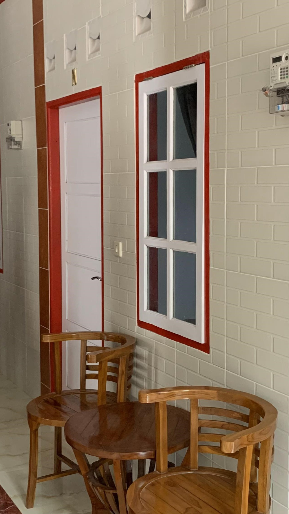
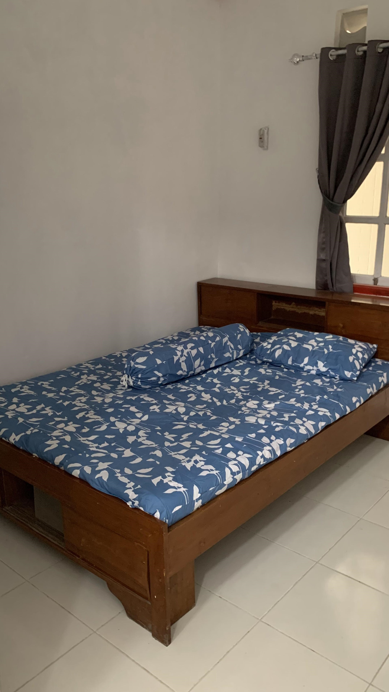

Detail Kamar
Berikut fasilitas disetiap masing masing kamar

Kursi depan Kamar
Kursi depan kamar indekos adalah area yang umumnya terletak di depan pintu masuk kamar. Fungsinya adalah memberikan tempat duduk yang nyaman saat mereka memasuki atau meninggalkan kamar.

Kasur single Bed
Kasur single bed di indekos adalah tempat tidur dengan ukuran yang dirancang untuk satu orang. kasur ini di khususkan untuk tempat tidur bagi satu orang penghuni.

Toilet Dalam
Toilet dalam di indekos adalah fasilitas kamar mandi yang terletak di dalam kamar atau unit hunian pribadi, memberikan kenyamanan dan privasi bagi penghuni.